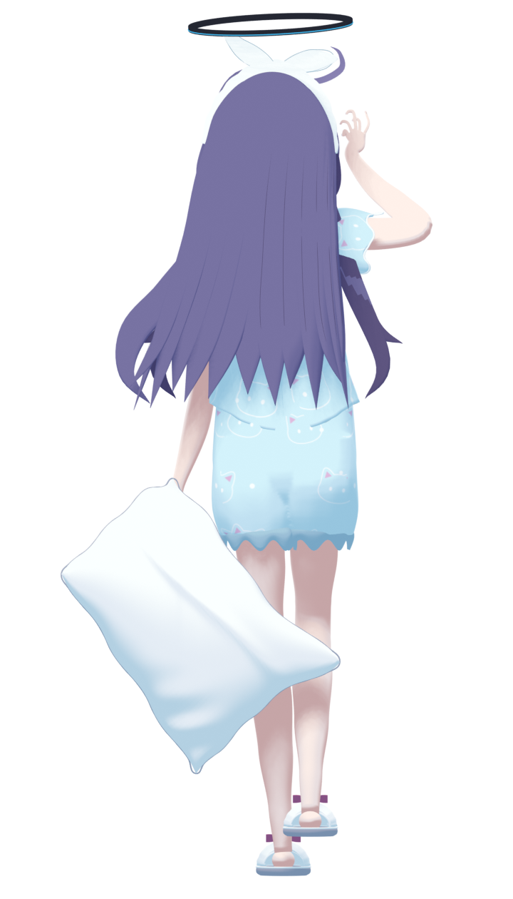
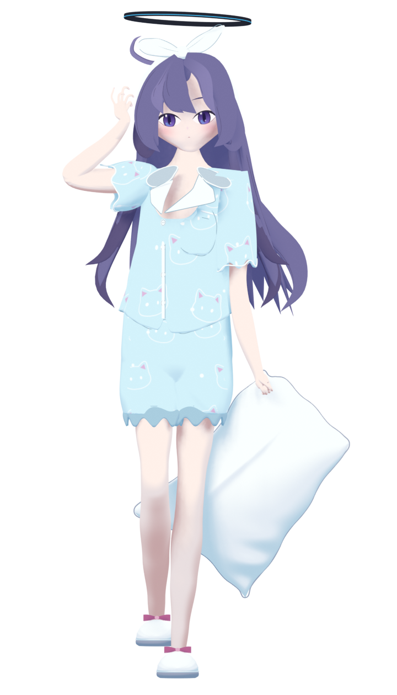

back.png
/home/dev/project/3d/gpt6-astra-pro_mcp-colabdev_blender_moonlit-pajamas/preview/history/R23/back.png88/100 · Subjective visual review. Only actual retained renders are shown.

/home/dev/project/3d/gpt6-astra-pro_mcp-colabdev_blender_moonlit-pajamas/preview/history/R23/back.png/home/dev/project/3d/gpt6-astra-pro_mcp-colabdev_blender_moonlit-pajamas/preview/history/R23/face.png
/home/dev/project/3d/gpt6-astra-pro_mcp-colabdev_blender_moonlit-pajamas/preview/history/R23/front.png/home/dev/project/3d/gpt6-astra-pro_mcp-colabdev_blender_moonlit-pajamas/preview/history/R23/hand.png